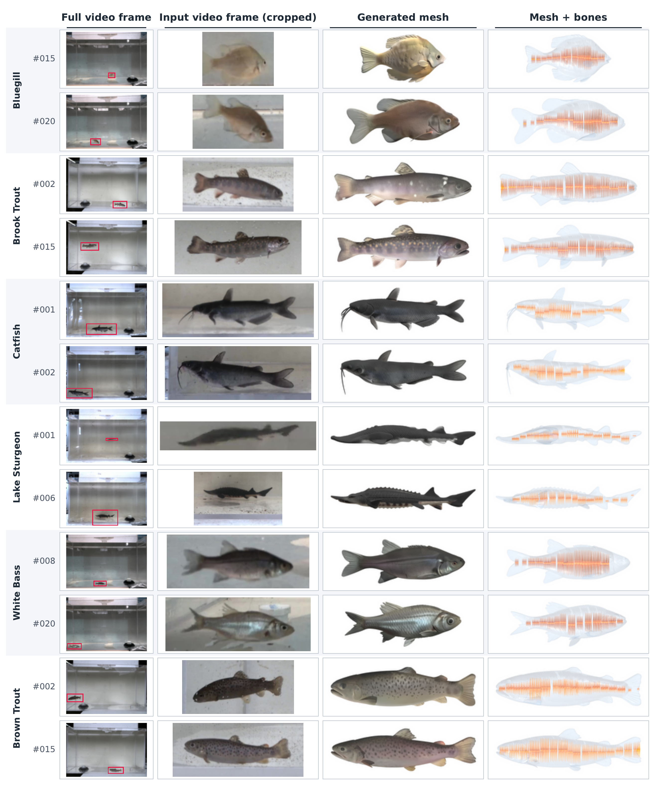

ROV capture demonstration. The full video is also available on
YouTube.
Abstract
We present Video2SwimFish, an automated pipeline and benchmark for building controllable fish assets from real-fish videos for underwater embodied AI. Given synchronized multi-view videos of an individual fish, the pipeline generates a metrically scaled deformable mesh from a VLM-selected canonical frame, builds internal articulation adapted to that individual’s morphology through a VLM actor–critic loop, and extracts a Biological Locomotion Manifold (BLM). The BLM provides a low-dimensional action space bounded by real-fish motion. Compared with learning directly in joint space, it lets the individual swimming policy of each reconstructed fish converge faster and reach a higher task success rate. We release two paired datasets: synchronized top- and front-view recordings of 120 individual fish across 6 species, and the controllable assets and individual swimming policies derived from them. Because every asset is tied to the animal it came from, the dataset supports a benchmark that evaluates locomotion learning not only on task success but on fidelity to that individual’s locomotion behavior. We evaluate on three tasks: 3D trajectory following, target reaching, and capture of the assets by a simulated BlueROV underwater robot, together with a human study in which fish experts judge the biological realism of the simulated fish, complementing automated evaluation metrics. We find that task success and locomotion fidelity do not necessarily improve together, and we identify faithful reproduction of individual animal locomotion as an open challenge for the community.
Dataset Display

Dataset display with full video frames, cropped input frames, generated meshes, and mesh-bone structures across representative fish species and individuals.
Synchronized top- and front-view recordings of 120 individual fish across six species, with 20 individuals per species. Each fish is recorded alone for two and a half minutes at 32 fps and 2736 × 1824 resolution.
Table 5. Dataset summary. Coverage is the fraction of body length spanned by the bone chain; alignment is the mean angle between each bone axis and the local body centerline.
Pipeline Overview
Figure 1. Overview of Video2SwimFish. Given multi-view real fish videos, Video2SwimFish generates individual fish meshes with controllable articulations and derives a Biological Locomotion Manifold (BLM) from real-fish swimming motion. Reinforcement learning then uses the BLM to learn an individual swimming policy for each controllable fish, producing a dataset of biologically grounded, controllable fish assets for downstream embodied-agent learning and interaction.
Figure 2. The Video2SwimFish articulation generation pipeline. A VLM selects the most canonical frame from the multi-view video, from which Meshy generates a 3D fish mesh. An actor VLM then proposes a skeleton as a list of bone templates with positions and sizes, and a critic VLM scores it and returns feedback; the two iterate until the critic accepts.
3D Mesh Generation
Qwen3-VL selects a canonical frame, and Meshy generates a mesh scaled to the measured body length. Across all 120 fish, mean affine-aligned silhouette IoU is 0.91 in the input side view and 0.75 in the unseen top view.
VLM-based Articulation
An actor VLM proposes bone templates, positions, and sizes; a critic VLM scores the articulation and returns feedback. The final bone chain is coupled to the deformable fish body in the simulator.
Biological Locomotion Manifold
Synchronized midlines are fused into a 3D body midline and mapped into lateral and vertical joint angles by inverse kinematics. Eight PCA modes capture 99.6% of the joint-angle variance on average and provide the individual fish's action space.
Benchmark
Locomotion learning is evaluated on task success and biological fidelity. The two swimming tasks use twelve fish, two per species, and three random seeds. The ROV case study uses six fish, one per species. Twelve expert raters assess 25 blinded Task 1 clips.
Tasks
Task 1: 3D Trajectory Following
Task 2: Target Reaching
Case Study: BlueROV Capture
Human Study: Perceived Biological Fidelity
Methods
Joint RL
Joint RL + AMP
CPG + RL
BCO + RL
BLM + RL (Ours)
Metrics
Completion rate and Fréchet distance
Motion coverage and bending-envelope correlation
Speed error
Targets reached, time to reach, and timeout rate
ROV capture success and epochs to convergence
Expert plausibility, path match, speed match, and overall similarity
Results
Task 1: 3D Trajectory Following
BLM + RL completes 0.70 of held-out paths and covers 0.85 of real-fish bending motions. Its median training run reaches a completion rate of 0.5 in 20 epochs, compared with 32 for BCO + RL and 70 for Joint RL.
Figure 3. The five methods on the same held-out Task 1 trajectory of lake sturgeon 001, side view. Top row: the real fish; other rows: one method each; columns: time. Dashed gray: the real fish’s reference trajectory; orange: path swum so far; check/cross: completed or not.BLM rollout for the five-baseline fish trajectory comparison. View the full task page.
Figure 4. The BLM+RL episode of Figure 3 in 3D. Dashed gray: the real fish’s reference path; orange: the simulated fish’s trail; star: start; red dot: target. World view: the whole episode. Close-up view: the fish’s body and midline. Full videos of all methods: videos/task1_trajectory_following/ in the supplementary material.Task 1 trajectory-following rollout for White Bass #008 using the BLM + RL policy.
Figure 5. Motion coverage on the fish of Figure 3. Each point is one 0.5 s body-bending motion of the real fish, projected onto its first two principal components. CPG+RL leaves more of the real motions uncovered than BLM+RL.
Table 1. Task 1 3D trajectory following on twelve fish (two per species), evaluated on held-out windows: completion rate, Fréchet distance (BL), motion coverage, bending-envelope correlation and speed error ∆v (BL/s). Mean ± standard deviation over fish; each fish is first averaged over three seeds. Best mean per column in bold.
Task 2: Target Reaching
BLM + RL reaches 9.0 of 10 targets per episode, with a timeout rate of 0.10 and motion coverage of 0.96, averaged over twelve fish.
Task 2: Reach 10 Targets using BLM + RL. View the full task page.
Figure 6. One Task 2 episode of BLM+RL (lake sturgeon 016): the fish reaches all ten targets. Orange line: the fish’s trajectory; spheres: the reach range of each target (radius 0.4 BL); star: start. Full videos of all methods: videos/task2_target_reaching/ in the supplementary material.
Table 2. Task 2 target reaching on twelve fish (two per species): targets reached per episode (out of 10), time to reach (s), fraction of attempts that time out, motion coverage and bending-envelope correlation. Mean ± standard deviation over fish; each fish is first averaged over three seeds.
Case Study: BlueROV Capture
All six capture policies succeed in at least 98% of evaluation episodes, with 381 successful captures out of 384 episodes in total. Training converges within 145–217 epochs.
BlueROV capture of a lake sturgeon driven by its own BLM + RL policy. View the full task page.
Figure 7. Case Study: the ROV scoops up a white bass (white bass 008) with its hand net. Left: start of the episode; right: the fish is inside the net 1.1 s later. Each close-up shows the fish. Full videos: videos/case_study_rov_capture/ in the supplementary material.
Table 3. Case Study: ROV capture of fish driven by their own Task 1 BLM+RL policy (64 evaluation episodes per fish).
Human Study: Perceived Biological Fidelity
Twelve fish experts rate 25 blinded clips from three fish and five held-out trajectories. BLM + RL receives the highest mean plausibility (4.48/5), path match (3.65/5), and overall similarity (4.07/5); CPG + RL receives the highest speed match (4.92/5). The mean appearance score across all clips is 4.9/5.
Human study example: real lake sturgeon and BLM + RL simulation. View the full task page.
Table 4. Human study: expert ratings (1–5, mean ± standard deviation over the ratings of twelve raters) of 25 Task 1 clips (3 fish, 5 held-out trajectories); anchors are zero-action drifting fish. Appearance is the same asset for every method and is reported once in the text. The videos and questions shown to the raters: videos/human_study_clips/ in the supplementary material and Table 10.
Table 8. Silhouette IoU between the generated mesh (orthographic projection of the mesh triangles) and hand-drawn outlines of the real fish: mean ± standard deviation over all 120 fish of the dataset. Side view: the canonical input frame; top view: a frame of the second camera that the image-to-3D model never saw. Similarity: 4-DOF alignment; affine: 6-DOF refinement; body only: both silhouettes with fins morphologically stripped before the affine IoU.
Figure 8. Mesh-versus-photo silhouettes for eight of the fish of Table 8, in the side view that the mesh was generated from (left) and in the top view that the image-to-3D model never saw (right). Each group shows the photograph with the hand-drawn outline, the mesh from the same direction, and the two silhouettes after affine alignment with their IoU (gray: both, red: photo only, blue: mesh only).
Additional Validation, Task Details, and Comparisons
Table 6. BLM fitted on the training runs only against the released BLM (all frames), eight modes. Angle: principal angles between the two subspaces in joint-angle space (mean over the eight modes; largest of the four leading modes). Variance: share of the joint-angle variance of all frames inside each subspace. Bounds: change of the P99 bounds when only training frames are used (median over modes). Inside: share of held-out frames whose coefficients lie inside the bounds. Error: mean reconstruction error of the held-out midlines.
Table 7. Midline extraction accuracy against human annotations (% of standard length; median over fish, range in brackets). Human: Chamfer / length error between repeated annotations of the same frames.
Table 9. BLM-to-joint mapping accuracy on the twelve benchmark fish (mean ± std over fish). Joint R2, RMSE and amplitude ratio compare the realized with the commanded joint angles; curvature R2 compares the input and output of each stage alone, and the real IK curvature with the realized one end to end.Figure 9. Task 2 target distribution, 3000 targets sampled with the evaluation settings. The fish is at the origin with its nose along +x. Top left: top view; the dashed circle is the reach radius (0.4 BL) and the gray rings mark 1, 2 and 3 BL. Top right: side view, horizontal distance against height. Bottom: histograms of the bearing θ (mean 0◦, σ = 30◦, truncated at ±90◦) and the elevation φ (mean 0◦, σ = 10◦, truncated at ±30◦). Most targets lie ahead of the fish at about its depth, with occasional sharp turns and climbs.
Table 11. What is new in Video2SwimFish, compared item by item with the closest prior work. Numbers are from Table 1 and Section 3.1.
Limitations
The simulations use an approximate quasi-steady hydrodynamic model rather than full fluid–structure interaction. Sim-to-real transfer has not been tested. Due to compute limits, the benchmark evaluates twelve of the 120 fish, with six in the capture case study. BLM + RL's advantages over a well-tuned CPG are small compared with variation across individual fish.
Code and Data
The project website, paired videos, controllable assets, and
individual policies are prepared for public release. Code and data
links will be updated as the public repositories are finalized.
Paper: under reviewCode: GitHub repositoryDataset: Hugging Face release

![Table 6. BLM fitted on the training runs only against the released BLM (all frames), eight modes. Angle: principal angles between the two subspaces in joint-angle space (mean over the eight modes; largest of the four leading modes). Variance: share of the joint-angle variance of all frames inside each subspace. Bounds: change of the P99 bounds when only training frames are used (median over modes). Inside: share of held-out frames whose coefficients lie inside the bounds. Error: mean reconstruction error of the held-out midlines.](./blm-training-split-results.png)
![Figure 9. Task 2 target distribution, 3000 targets sampled with the evaluation settings. The fish is at the origin with its nose along +x. Top left: top view; the dashed circle is the reach radius (0.4 BL) and the gray rings mark 1, 2 and 3 BL. Top right: side view, horizontal distance against height. Bottom: histograms of the bearing θ (mean 0◦, σ = 30◦, truncated at ±90◦) and the elevation φ (mean 0◦, σ = 10◦, truncated at ±30◦). Most targets lie ahead of the fish at about its depth, with occasional sharp turns and climbs.](./target-distribution.png)